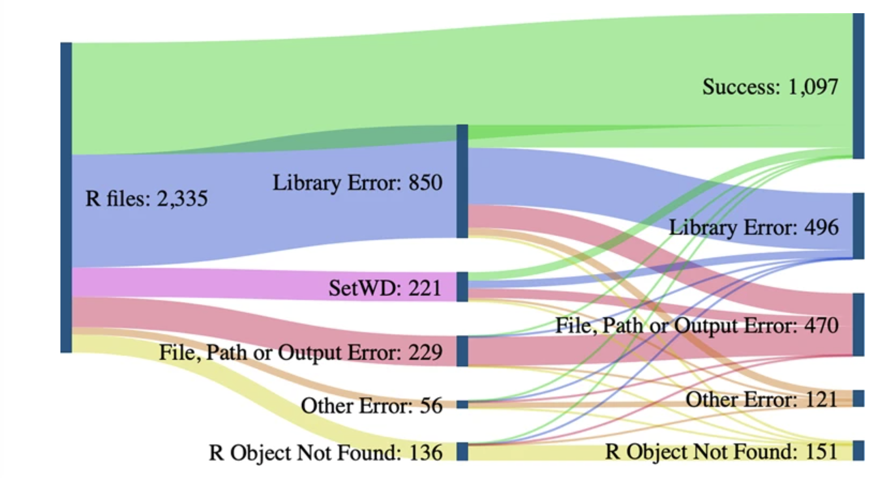
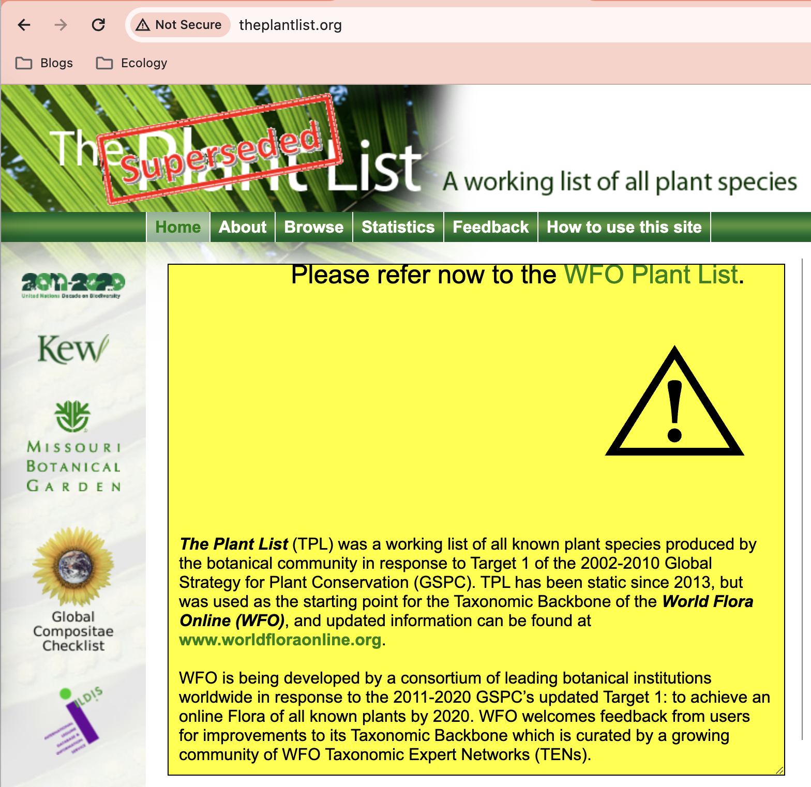
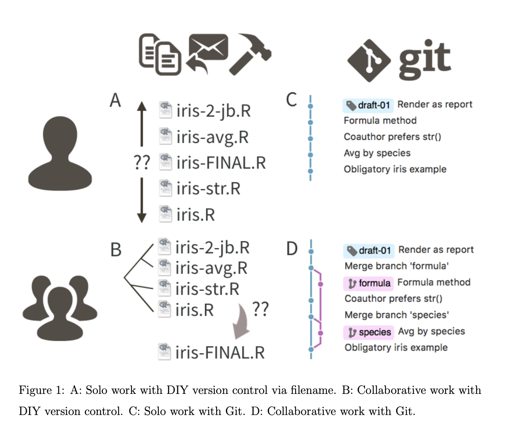
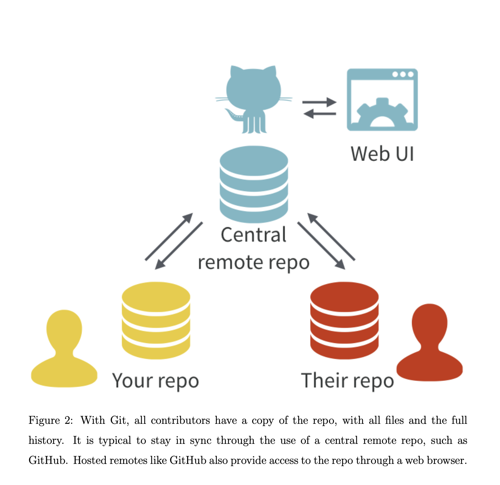

library(Taxonstand)
TPL('Taraxacum officinale')Documentation
What is computational reproducibility?
The ability for another researcher to understand what you did for a paper - your data, methods and analyses - and repeat using the same data.
- Same data, same analysis, same result
The ability for you to repeat what you did!
- E.g., during the review process you may need to repeat your analysis workflow.
Different from replicability: another research team repeats the whole research process and gets the same results
- different data -> same result.
Why aim for reproducibility?
Increase trust in science:
- Replicability crisis in pyschology
Good return in investment - helps your future self
- (if you change a dataset, don’t need to spend hours trying to figure out what you did)
Others can build off what you’ve done.
How do you make your analyses reproducible?
What we’ll talk about today
The how is surprisingly hard!
Figure below from Trisovic et al. 2022 Scientific Data

Success rate and errors before and after code cleaning. To objectively determine the effects of code cleaning, we subset the results that have explicit “successes” and errors while excluding the ones with TLE values as the outcome. As a result, the count of files in this figure is lower than the total count.
Some reasons why it might be hard to make your analysis reproducible (examples from my own life):
Your R packages get updated
Websites your R package was scraping become defunct (e.g., Taxonstand and TPL)

Your working directory might be different if you change computers
Disorganized code and analyses
- where is the raw data??
Not automated
- how did I go from raw data to processed data?
Poorly documented code and analyses:
- why did I update these names with The Plant List and these other names with World Flora Online?
Four facets of reproducibity
from Utrecht University
Documentation
- What do you need to start this project
- why did
Organization
- What is the workflow?
Automation
- Automated analyses
Dissemination
- How do you spread and share your data and code
What is it ans why is it important?
“Version control, also known as source control, is the practice of tracking and managing changes to software code. Version control systems are software tools that help software teams manage changes to source code over time.” (Atlassian)
” Data analysis, statistical research, and teaching statistics have at least one thing in common: these activities all produce many files! There are data files, source code, figures, tables, prepared reports, and much more. Most of these files evolve over the course of a project and often need to be shared with others, for reading or edits, as a project unfolds. Without explicit and structured management, project organization can easily descend into chaos, taking time away from the primary work and reducing the quality of the final product. This unhappy result can be avoided by repurposing tools and workflows from the software development world, namely, distributed version control.” (Janny Bryan - Excuse me do you have a moment to talk aout version control)
“Anyone who has wrestled with multiple versions of a document or script named by appending the word “final” will know how quickly such naming conventions can escalate into absurdity. Version control provides a structured and transparent means of tracking changes to code and other files. It was designed for use in software development and it is equally applicable to scientific programming. By recording snapshots of a project at successive points in time, you can create a record of your project’s development while keeping your workspace clean. Version control also facilitates collaboration when used within project teams or when contributing to open source software projects” (Britich Ecology Society)

Version control software is designed to help you manage your file revisions. Version control software runs directly on your computer, allowing you to manage files within your local file system. You can also use version control software to interact with external copies of versioned files if you choose. (Britich Ecology Society)
Version control is the lab notebook of the digital world. It is what professionals use to keep track of what they have done and to collaborate with other people. Every large software development project relies on it, and most programmers use it for their small jobs as well.
It is not just for software: books, papers, small data sets, and anything that changes over time or needs to be shared can and should be stored in a version control system.
Tip
“Tracking changes in documents with extended file formats such as Word or Excel documents is better done using their built-in revision control, although you can use version control software to store snapshots of these files.”
How does it work?
Git is what one type of a version control system for file management. The main idea is that as you (and your collaborators) work on a project, the software tracks, and records any changes made by anyone.
- Similar to the “track changes” features in Microsoft Word, but more rigorous, powerful, and scaled up to multiple files
- Great for solo or collaborative work
- Version control systems start with a base version of the document and then record changes you make each step of the way.
- For example, two users can make independent sets of changes on the same document.
- Unless multiple users make changes to the same section of the document - a conflict - you can incorporate two sets of changes into the same base document.
- It allows us to decide which changes will be made to the next version (each record of these changes is called a commit), and keeps useful metadata about them.
- The complete history of commits for a particular project and their metadata make up a repository.
- Repositories can be kept in sync across different computers, facilitating collaboration among different people.

A note on GitHub
“We’ve introduced Git’s powerful structure for file management, so where does GitHub fit in? GitHub complements Git by providing a slick user interface and distribution mechanism for Git repositories. Git is the software you will use locally to record changes to a set of files. GitHub is a hosting service that provides a Git-aware home for such projects on the internet. These relationships are shown in Figure 2. GitHub is like DropBox or Google Drive, but more structured, powerful, and programmatic.” (Bryan 2017)
So, What is GitHub?
- online platform and service built around Git
- provides a centralized hosting platform for Git repositories
- allows us to store, manage, and collaborate on their Git repositories in the cloud
- offers additional features on top of Git, such as a web-based interface, issue tracking, project management tools, pull requests, code review, and collaboration features
- enables easy sharing of code with others, facilitating collaboration and contribution to open source projects
- provides a social aspect, allowing users to follow projects, star repositories, and discover new code

Version Control for Open Science and Reproducibility
Keeping track of your work is not only useful for when you are currently working on a project or to keep thinks organized. It is also very powerful tool for documenting your work and making it transparent and reproducible.
One of the first steps to achieve reproducibility is to set up a robust structure for our work. The fundamental idea behind a reproducible analysis is a clean, repeatable script-based workflow. This will allow you to re-run your analysis as many times as needed before (and after) the completion of your project. The smoother and more automated the workflow, the easier, faster and more robust the process of repeating it will be (British Ecology Society).
Let’s talk about organization.
File System Structure
How do we tell our code where to find files?
By stating a file path. For example if my code is trying to read some_data.csv
some_data <- read.csv("/home/vargas-poulsen/Documentes/Workshops/RLadies-SB/reproducible-workflows/some_data.csv")If I share my script with this file path to my colleagues, would they be able to open the file?
Probably not, given that the file is unique to my machine with my user name and file system organization.
A better (and reproducible) way:
RProjects
- Provides a self contained working directory that does not depend on the absolute location of your computer.
- Bundles all your work within a working directory, pointing to relative locations within the project.
- Within this centralize location we can organize all the files involved in our project (inputs data, scripts, outputs, etc.)
When you create an RProject, it creates and Rproj file and a folder in your computer that will be the working directory when your are working in your Rproj.

Absolute paths vs relative paths
An absolute path always starts with the root of your file system and locates files from there. For example:
/home/vargas-poulsen/Documentes/Workshops/RLadies-SB/reproducible-workflows/data/some_data.csvRelative paths start from some location in your file system that is below the root. Relative paths are combined with the path of that location to locate files on your system. R refer to the location where the relative path starts as our working directory. For example, if my project is named
repoducible-workflows, then the relative path tosome_data.csvwill bedata/some_data.csv.
Organizing files in you project
As we mentioned before, when you create an R Project, R creates a folder in your computer (note that you choose where this folde lives) with the same name as your R project, this folder is the working directory when you open the .Rpoj file. After creating a project, it is good practice to set up an organized structure of sub folders within you project.
Organization is personal and will vary depending on each project’s need. The main point is to ensure that the structure of the folders (directories) and location of files in your project are consistent, informative and works for you. Having a consistent and organized project structure gets you a long way when it comes to reproducibility.The location of files should be as informative as possible on what a file contains The idea is to organize your research into a compendium that has all of the digital parts needed to replicate your analysis, like code, figures, the manuscript, and data access.
Some common sub-folders (directories) within a basic R project structure are:
data: where we store our data (often contains sub-directories for raw, processed, and metadata data)Rorscripts: contains scripts for cleaning or wrangling, etc. (some find this name misleading if their work has other scripts beyond the R programming language, in which case they call this directoryscripts)plotsorfigs: generated plots, graphs, and figuresdocs: summaries or reports of analysis or other relevant project information
Directory organization will vary from project to project, but the ultimate goal is to create a well organized project for both reproducibility and collaboration.

One more thing about (reproducible) file paths
Working within an R project is the first step to making my file paths reproducible given that all my work is contained within this project. However, pointing to things within my project (by pointing the correct file path) can still bring some issues when reproducing my work in different machines. For example from R for Data Science (Grolemund & Wickham)
Mac and Linux uses slashes (e.g. plots/diamonds.pdf) and Windows uses backslashes (e.g. plots.pdf). R can work with either type (no matter what platform you’re currently using). But, backslashes mean something special to R, so we need to be careful when using them.
~ is a convenient shortcut to your home directory on mac. Windows doesn’t really have the notion of a home directory, so it instead points to your documents directory.
How to make your file paths withing your project robust?
here::here()

The here package help us set unbreakable paths by setting the default working directory to be the project’s directory and, you don’t need to use either \\ or / to indicate path to you file. Instead, each directory in your file path is written in quotation separated with a comma. For example if I’m wowing on a .qmd file that lives inside my doc folder and I want to read in data from data/raw it would look like this:
raw_data <- read_csv(here::here("data", "raw", "my_raw_data.csv"))The here::here() calls the function here() from the (::) package here.
This is particularly helpful when we have multiple folders in out project for different purposes.
Concluding Remarks
Using R Projects + here() allows you to have self contained and portable analysis with all file paths relative to the project. If you share your project folder, your colleague, friend, collaborator should be able to run all the scripts with (hopefully) no issues. AKA.. We have a reproducible workflow.
Naming Conventions
The documentation of your work starts with good files names and file system organization. This means naming materials, variables, objects, etc, associated with your analysis in a
- meaningful,
- concise,
- informative,
- consistent, and
- code-friendly way.
The name and location of files should be as informative as possible on what a file contains, why it exists, and how it relates to other files in the project (British Ecology Society). These principles apply to all files in your project, not just scripts and objects in your script. Good naming practices allows for a more intuitive workflow and helps with good data management practices.
Clear naming structure allows us to understand the content and relationship among elements in your analysis. It also makes it easier to search for a specific input or output associated to a particular script or step in your research.
Meaningful
Names of variables, data frames, files (here on names) should not be too generic that the user or reader would need a definition or description to know what it contains.
Name should be specific and the easier to interpret the better.
Ensure file names also include informative description of file contents.
“As a general rule of thumb, it’s better to prefer long, descriptive names that are easy to understand rather than concise names that are fast to type.” (Grolemund & Wickham, R4DS)
Bad vs Good filenames
Bad - 01.R - fig1.png - file-1.csv
Better - 01_download_data.R - fig1_scatterplot_bodytemperatur_metabolicactivity.png - ca_mean_annual_temp_by_county.csv
Concise
It’s a balance between meaningful and conciseness, but it is better to be descriptive than not know what it is.
Longer names means more typing, longer coding but less effort in looking up what each variable is.
Consistent
Keep names for the same thing completely identical. R is space and case sensitive, this means that “CA Temp” is completely different than “ca_temp”.
Make you life easier and be consistent on how you name things across data frames. For example, if you have a column
date, other data frames SHOULD NOT be calledDate_start.Chose a naming convention and stick to it for better readability of your code. this_is_snake_case, (good for naming objects in your scripts), thisIsCamelCase, this-is-kebab.
Easy to order by default
This is particular important for files names.
Start the file name with the most generic aspect (but significant) and then go to the more specific.
“Choose filenames so that alphabetical sorting will organise types of files for you: in the same way that ISO 8601 puts the most significant unit (year) first so that alphabetical = chronological.” – Hao Ye, UC San Diego
Code/Machine Friendly
Avoid spaces, punctuation, accented characters and case sensitivity.
More specifically, stick to “a-zA-Z0- 9_” characters. Use periods/full stops for file type only (i.e. .csv).
Use delimiters to separate words. For example, snake_case_convention or kebab-case-convention. “_” and “-” are great delimiters, be consistent and don’t mix, this makes names easy to match and search programmatically and easy to analyse.
Concluding Remarks
It is not the end of the world if you give something a bad name. And no work has to be perfect, but keeping this recommendations in mind could save you time in the long run and help search for specific files, objects with in a project easily.
Version Control: Git
“Version control, also known as source control, is the practice of tracking and managing changes to software code. Version control systems are software tools that help software teams manage changes to source code over time.” (Atlassian)
GitHub
Workflow (part 1): RStudio + Git + GitHub
What about my (bigish) data?? - Workflow (part 2)
- Google Drive (Box, SharePoint?) - RStudio - GitHub
- Zenodo (other repositories) - RStudio - GitHub
- Server - RStudio - GitHub
What’s in a project README?
Your project’s README file on GitHub introduces other researchers to your project repository; it is first thing someone will see when they encounter your project.
It also helps YOU. Help your future self remember what you did and why.
It should include:
- Project name
- Project description - what does the code do? why are you doing it?
- How to get started
- Development environment: what dependencies did you use and what version?
- Workflow - how do you run the analysis?
- Credits
Example of a README that includes, project name, description, how to get started and examples showing how to run package functions
Writing reproducible code
Stick to a readable coding style
Stick to “a-zA-Z0- 9_” characters; avoid periods (except eg ‘.csv’)
The R package styleR package will style your code according to the tidyverse style guide.
styler example
The code below doesn’t conform to the tidyverse style guide
my_df <- data.frame(a = 1:3, b = c("a", "b", "c"))Let’s use styler to fix that

styler takes this
my_df=data.frame(a=1:3, b=c("a","b","c"))and changes it to this
my_df <- data.frame(a = 1:3, b = c("a", "b", "c"))Naming variables and functions
Try to be concise and descriptive.
Functions: use a verb and make it clear what the function does
For example, instead of
my_function <- function(a_number) a_number + 1use
add_one <- function(a_number) a_number + 1Data frames and variables: use a noun and make it clear what it is
Instead of:
my_df <- data.frame(
plant = c("Claytonia virginica", "Erythronium americanum"),
abundance = c(100, 20)
)use
plant_abundance <- data.frame(
plant = c("Claytonia virginica", "Erythronium americanum"),
abundance = c(100, 20)
)Commenting code
Help your future self! You want to make it easy for yourself (and others) to understand what you did and why.
Put a brief explanatory comment at the start of every program
Focus on why instead of what. Your code will tell the reader what it is doing, so focus on the reasoning behind your decisions.
Comments that tell us what the code does
# join the measurement data with the bee species data
# filter out NA scientific names
# and filter out any bee measurements from the species Lasioglossum incomplotum
cleaned_df <- researcher_measurements %>%
left_join(bees_df) %>%
filter(!is.na(scientificName)) %>%
filter(scientificName != "Lasioglossum incompletum")Comments that tell us why the code does what it does
#for our analysis we only want to analyze bee specimens that are identified to species, so we'll join our measurement data with the bee species data and remove anything not identified to species. We'll also removed the specimens of the species Lasioglossum incompletum, since this is not noe of our focal speecies.
cleaned_df <- researcher_measurements %>%
left_join(bees_df) %>%
filter(!is.na(scientificName)) %>%
filter(scientificName != "Lasioglossum incompletum")Decompose code into functions
This minimizes errors (if you modify code in one part of the script and then forget to modify the code in another part that is doing the same thing)
Use these if you find yourself copying and pasting
Let’s return to our previous example.
I had two sets of bee measurements, one from undergraduate researchers and one from community scientists. I needed to upload both datasets and clean them in the same way and I found myself copying and pasting:
researchers_cleaned <- researcher_measurements %>%
left_join(bees_df, by = "catalogNumber") %>%
filter(!is.na(scientificName)) %>%
filter(scientificName != "Lasioglossum incompletum")
community_cleaned <- community_measurements %>%
left_join(bees_df, by = "catalogNumber") %>%
filter(!is.na(scientificName)) %>%
filter(scientificName != "Lasioglossum incompletum")So instead I wrote a function:
clean_data = function(df){
df %>% left_join(bees_df, by = "catalogNumber") %>%
filter(!is.na(scientificName)) %>%
filter(scientificName != "Lasioglossum incompletum")
}and applied it to both my data sets:
researchers_cleaned <- researcher_measurements %>%
clean_data
community_cleaned <- community_measurements %>%
clean_dataNow if I need to change something, I don’t need to worry about making that change in multiple lines of code.
#I'm changing this function so that we also filter bees whose scientific names are "" in the dataset.
clean_data = function(df){
df %>% left_join(ucsb, by = "catalogNumber") %>%
filter(!is.na(scientificName) & scientificName != "") %>%
filter(scientificName != "Lasioglossum incompletum")
}Communicating with collaborators
Github issues – good for communicating with collaborators.

Github wikis – particularly for documentation; markdown file that you access through github